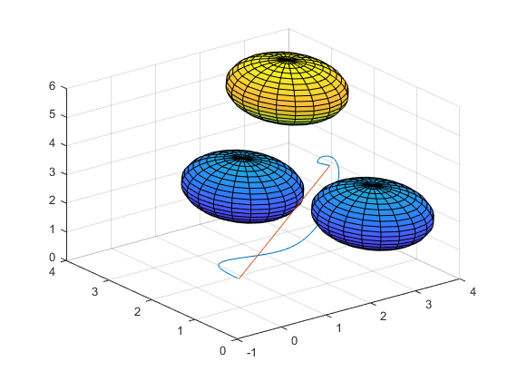

Obstacle Avoidance
Contents
Define/Create Start, Finish, & Obstacles
clear all %#ok<*CLALL> close all %Path Start (XYZ) %path_start = [5 5 5]; path_start = [3 2 3]; %Path End (XYZ) %path_end = [1 1 5]; path_end = [0 1 1]; %straight line path path_straight = [path_start; path_end]; %potential fields params z = 1; %attractions coefficient n = 1; %repulsion coefficient p0 = 2; %effective radius %planner params step_size = 0.01; converg_size = 0.03; %Define spherical obstacles with radius (r), and centres at obs_locs %(XYZ) r = 1; [sphere_x, sphere_y, sphere_z] = sphere(); obs_locs = [ 3 1 2; 2 3 2; 3 3 5; ];
Path Plan
cur_q = ikin(path_start); end_q = ikin(path_end); cur_pos = fkin(cur_q); end_pos = fkin(end_q); path = squeeze(cur_pos(3,1:3,4)); %for k = 1:1000 while norm(path_end-cur_pos(3,1:3,4),2)>converg_size t = zeros(1,3); %calculate torques per joint for i = 1:size(cur_pos,1) %add attraction to goal cur_t = (jacob(cur_q,i)'*calcAtt(squeeze(cur_pos(i,:,:)),squeeze(end_pos(i,:,:)), z))'; t = t + cur_t; %add rep to obs for j = 1:size(obs_locs,1) cur_t = (jacob(cur_q,i)'*calcRep(squeeze(cur_pos(i,:,:)),obs_locs(j,:),n,r, p0))'; t = t + cur_t; end end step = step_size*t/norm(t,2); cur_q = cur_q + step; cur_pos = fkin(cur_q); path = vertcat(path, squeeze(cur_pos(3,1:3,4))); squeeze(cur_pos(3,1:3,4)); end
Plot Path and Obstacles
figure plot3(path(:,1), path(:,2), path(:,3)); hold on plot3(path_straight(:,1), path_straight(:,2), path_straight(:,3)); grid on for i = 1:size(obs_locs,1) surf(sphere_x*r + obs_locs(i,1), sphere_y*r + obs_locs(i,2), sphere_z*r + obs_locs(i,3)) end